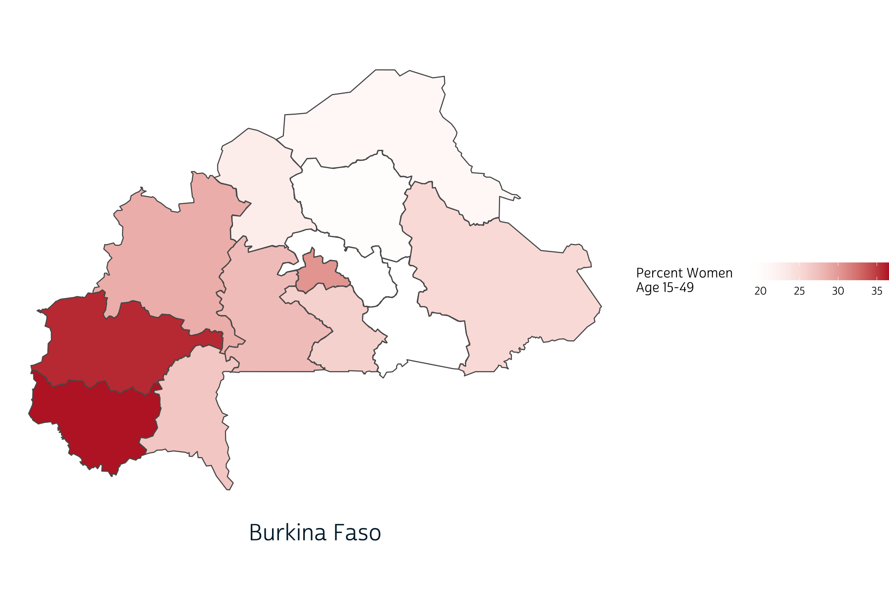
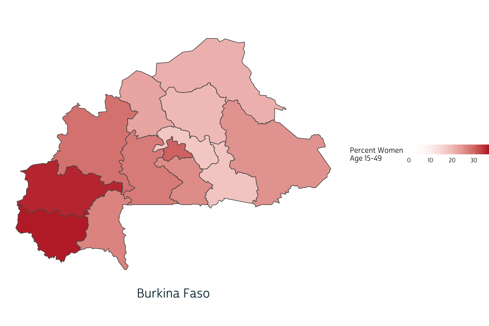

Tools for creating spatial visualizations that compare change over time or differences between PMA countries.
Because the IPUMS PMA data website allows users to combine samples from multiple countries and multiple years together in a single download, tools like facet_wrap and facet_grid are an indispensable part of our data visualization toolkit. As weve shown elsewhere on this blog, facets are a simple way to create plots for multiple samples displayed as an array of panels.
For instance, in this recent post, we used faceted bar charts to show change in contraceptive use status for women in six samples arranged over 18 panels.
In this post, well practice building choropleth maps showing modern contraceptive prevalence1 for major (admin 1) regions in several PMA samples. As with the bar charts shown above, well use facets to arrange data for each sample together in an array of panels; however, well see that facet_wrap and facet_grid may not always be the best option for maps. Instead, well introduce a new package, cowplot, designed to bring additional flexibility to the alignment and arrangement of panels built with ggplot2.
Weve created a summary table modern_tbl for this post
with variables from the current
or recent family planning use variable group, where the column
PCT gives the estimated modern method prevalence within the
population of women aged 15-49 in each region GEO in each
sample year YEAR for each of three countries - Burkina
Faso, Ethiopia, and Uganda - listed in COUNTRY Weve also
attached GPS coordinate vectors representing the boundary of each region
in the geometry column - these come from a shapefile
downloaded from this page
on the IPUMS PMA data website. (If youre interested, check out our data
preparation steps by clicking the button below).
library(tidyverse)
library(ipumsr)
library(srvyr)
library(sf)
library(ggspatial)
# Load IPUMS PMA data extract into R
# This sample includes data from 3 countries, all available cross-sections
dat <- read_ipums_micro(
ddi = "data/pma_00143.xml",
data = "data/pma_00143.dat.gz"
)
# `COUNTRY` as a factor (for readability)
dat <- dat %>% mutate(COUNTRY = as_factor(COUNTRY))
# Create unique `YEAR` labels where multiple rounds of data were drawn
dat <- dat %>%
mutate(
YEAR = case_when(
COUNTRY == "Ethiopia" & ROUND == 1 ~ "2014a",
COUNTRY == "Ethiopia" & ROUND == 2 ~ "2014b",
COUNTRY == "Uganda" & ROUND == 2 ~ "2015a",
COUNTRY == "Uganda" & ROUND == 3 ~ "2015b",
COUNTRY == "Burkina Faso" & ROUND == 3 ~ "2016a",
COUNTRY == "Burkina Faso" & ROUND == 4 ~ "2016b",
TRUE ~ as.character(YEAR)
)
)
# Uganda has 15 regions in one sample, but just 10 in others
# Harmonize regions so that all samples have the same
dat <- dat %>%
mutate(
GEOUG = GEOUG %>%
lbl_relabel(
lbl(5, "Kampala") ~ .val == 0,
lbl(1, "Central 1") ~ .val == 1,
lbl(2, "Central 2") ~ .val == 2,
lbl(3, "East Central, Eastern") ~ .val %in% 3:6,
lbl(6, "Karamoja") ~ .val == 7,
lbl(7, "North") ~ .val %in% 8:9,
lbl(8, "South West") ~ .val %in% 13:14,
lbl(9, "West Nile") ~ .val == 10,
lbl(10, "Western") ~ .val %in% 11:12
) %>%
as_factor() %>%
if_else(is.na(.), as_factor(GEOUGSH), .)
)
# Now, rename any regions that do not match the labels in our shapefile
# Harmonize region vars for all countries together in a single var, `GEO`
dat <- dat %>%
mutate(
across(starts_with("GEO"), ~as_factor(.x) %>% as.character),
GEOBF = GEOBF %>% recode("Plateau-Central" = "Plateau Central"),
GEOET = GEOET %>% recode("Oromiya" = "Oromia"),
GEOUG = GEOUG %>% recode("South West" = "Southwest"),
GEO = case_when(
!is.na(GEOUG) ~ GEOUG,
!is.na(GEOET) ~ GEOET,
!is.na(GEOBF) ~ GEOBF
)
)
# A `modern_user` is anyone using a method other than rhythm, withdrawal, or
# other traditional
dat <- dat %>%
mutate(
modern_user = if_any(
starts_with("FPNOW") & -c(FPNOWUSRHY, FPNOWUSWD, FPNOWUSTRAD),
~.x %in% 1 # note: `%in%` generates FALSE if NA
)
)
# Estimate the population proportion for modern use / non-use in each `GEO`
modern_tbl <- dat %>%
as_survey_design(weight = FQWEIGHT, id = EAID, strata = COUNTRY) %>%
group_by(YEAR, COUNTRY, GEO, modern_user) %>%
summarise(pct = 100*survey_mean(vartype = NULL)) %>%
ungroup()
# We use `pivot_wider` to create 0% values if no modern users were found
modern_tbl <- modern_tbl %>%
pivot_wider(
c(YEAR, COUNTRY, GEO),
names_from = modern_user,
values_from = pct,
values_fill = 0
) %>%
select(-`FALSE`) %>%
rename(PCT = `TRUE`)
# Load shapefile and harmonize variable names with `dat`
# Include only our 4 countries of interest
shape <- st_read("../../data_local/shapefiles/subnational") %>%
st_transform(crs = 4326) %>%
select(COUNTRY = CNTRY_NAME, GEO = ADMIN_NAME) %>%
filter(COUNTRY %in% c("Burkina Faso", "Ethiopia", "Uganda"))
# Ensure that all shapes are fully enclosed, and smooth borders to 1000 meters
# Drop any regions marked "Waterbodies" (no households are there)
shape <- shape %>%
st_make_valid() %>%
st_simplify(dTolerance = 1000) %>%
filter(GEO != "Waterbodies")
# Attach shapes for each `GEO`
modern_tbl <- modern_tbl %>% full_join(shape)
# If no data collected in a region, duplicate `NA` for each `YEAR`
# This requires `pivot_wider` to create placeholder `NA` values
# Then, `pivot_longer` again: new rows appear for each `YEAR`
modern_tbl <- modern_tbl %>%
pivot_wider(
names_from = YEAR,
values_from = PCT
) %>%
select(-`NA`) %>%
pivot_longer(
where(is.double),
names_to = "YEAR",
values_to = "PCT"
)
# Note that some countries may have 2 samples drawn in the same year, but others
# included only 1 sample. Drop any extra `YEAR` labels for each `COUNTRY` here
modern_tbl <- modern_tbl %>%
group_by(COUNTRY, YEAR) %>%
filter(!all(is.na(PCT))) %>%
ungroup()
# Rearrange columns and rows for improved display
modern_tbl <- modern_tbl %>%
relocate(c(YEAR, PCT), .after = GEO) %>%
arrange(COUNTRY, YEAR, GEO)
modern_tbl
# A tibble: 260 5
COUNTRY GEO YEAR PCT geometry
<chr> <chr> <chr> <dbl> <MULTIPOLYGON []>
1 Burkina Faso Boucle du Mouhoun 2014 20.2 (((-3.190611 13.68045, -3.226559
2 Burkina Faso Cascades 2014 12.9 (((-5.39324 10.99398, -5.416136 1
3 Burkina Faso Centre 2014 21.9 (((-1.572501 12.60137, -1.566564
4 Burkina Faso Centre-Est 2014 17.2 (((-0.2427228 12.55885, -0.292054
5 Burkina Faso Centre-Nord 2014 11.4 (((-0.625751 13.99783, -0.6899 13
6 Burkina Faso Centre-Ouest 2014 10.7 (((-2.519715 12.83308, -2.557285
7 Burkina Faso Centre-Sud 2014 28.1 (((-1.459765 12.19329, -1.508548
8 Burkina Faso Est 2014 19.0 (((0.0653133 13.48729, 0.0587278
9 Burkina Faso Hauts-Bassins 2014 18.6 (((-4.4633 12.07738, -4.499922 12
10 Burkina Faso Nord 2014 9.68 (((-2.119268 14.15666, -2.353057
# with 250 more rows
# Use `print(n = ...)` to see more rowsLets look at an example featuring data from just one
country first. Well use our favorite mapping package ggspatial, since it
allows us to use familiar tools from ggplot2 to customize the layout
of our panel array. Most crucially, we use facet_wrap
to create one panel for each sample YEAR. Additionally,
well define the fill color for each region with scale_fill_gradient:
well use a red color #BD262D
for high-levels on modern method prevalence, and well use
transparent for regions where no modern method users were
sampled. The grey shade #CFCFCF
will represent regions were no women were sampled.
Finally, well customize the look of our plot with a theme well call
theme_pma. We encourage you to experiment with your own
theme, but feel free to use ours as a template if youre interested.
# Define `theme_pma` for maps
library(showtext)
sysfonts::font_add(
family = "cabrito",
regular = "../../fonts/cabritosansnormregular-webfont.ttf"
)
showtext::showtext_auto()
theme_pma <- theme_void() %+replace%
theme(
text = element_text(family = "cabrito", size = 13),
plot.title = element_text(
size = 22,
color = "#00263A",
hjust = .5,
margin = margin(b = 10)
),
plot.caption = element_text(
size = 22,
color = "#00263A",
hjust = .5,
margin = margin(t = 10)
),
panel.spacing = unit(1, "lines"),
legend.position = "right"
)
ggplot() +
layer_spatial(modern_tbl %>% filter(COUNTRY == "Ethiopia"), aes(fill = PCT)) +
facet_wrap(vars(YEAR), strip.position = "bottom", ) +
scale_fill_gradient(
low = "transparent",
high = "#BD262D",
na.value = "#CFCFCF"
) +
labs(
title = "Modern Contraceptive Prevalence in Ethiopia: 2014-2019",
fill = "Percent Women \nAge 15-49"
) +
theme_pma
Our use of facet_wrap works well in this case because the spatial extent of each panel is identical: weve only plotted the same country seven times. Watch what happens, though, when we try the same approach to faceting maps with different spatial extents. Here, well create one choloropleth for each of three countries sampled by PMA in 2019.
ggplot() +
layer_spatial(modern_tbl %>% filter(YEAR == "2019"), aes(fill = PCT)) +
facet_wrap(vars(COUNTRY), strip.position = "bottom", ) +
scale_fill_gradient(
low = "transparent",
high = "#BD262D",
na.value = "#CFCFCF"
) +
labs(
title = "Modern Contraceptive Prevalence: 2019",
fill = "Percent Women \nAge 15-49"
) +
theme_pma
The problem here is that facet_wrap
attempts to use the same scales along the x and y-axes by default. When
we facet by COUNTRY, each map is drawn to scale and in
absolute position. Instead, we want each countrys map to appear
approximately the same size and in the center of each panel.
In most ggplot2
applications, wed resolve this problem by setting
scales = "free". This should allow facet_wrap
to identify axes that fit the data in each panel. Instead, it generates
the following error:
ggplot() +
layer_spatial(modern_tbl %>% filter(YEAR == "2019"), aes(fill = PCT)) +
facet_wrap(vars(COUNTRY), strip.position = "bottom", scales = "free") +
scale_fill_gradient(
low = "transparent",
high = "#BD262D",
na.value = "#CFCFCF"
) +
labs(
title = "Modern Contraceptive Prevalence: 2019",
fill = "Percent Women \nAge 15-49"
) +
theme_pma
Error in `f()`:
! coord_sf doesn't support free scalesFortunately, we were able to find this excellent blog post with an explanation and work-around.
It turns out the the
ggplot2codebase assumes that it can maniulate axes independently of one another. This is very much not the case with geographic data where a meter vertically needs to equal a meter horizontally, socoord_sf()locks the axes in much the same manner ascoord_fixed().
Williams suggests a different approach using the cowplot package
developed by biologist Claus O.
Wilke at the University of Texas at Austin. Weve never featured
cowplot before on our blog, so we first needed to install
it from CRAN:
install.packages("cowplot")
The key difference in this approach is that you create each panel separately, and then use cowplot to align them. Panels can be arranged in rows or columns, and their sizes can be identical or individually specified. You can also overlay plots on top of each other to produce annotations or even watermarks. A general introduction is available here.
The function cowplot::plot_grid takes a list of plots as input, so we first need to write a function that will generate one plot for each of our four 2019 samples. Well start with Ethiopia first:
ggplot() +
layer_spatial(
modern_tbl %>% filter(COUNTRY == "Ethiopia" & YEAR == 2019),
aes(fill = PCT)
) +
scale_fill_gradient(
low = "transparent",
high = "#BD262D",
na.value = "#CFCFCF",
guide = guide_colorbar(
title.position = "left",
direction = "horizontal",
barwidth = unit(5, "cm")
)
) +
labs(
caption = "Ethiopia",
fill = "Percent Women \nAge 15-49"
) +
theme_pma
If we want to switch countries to Burkina Faso, for example, we only
need to replace the string "Ethiopia" in two places.
ggplot() +
layer_spatial(
modern_tbl %>% filter(COUNTRY == "Burkina Faso" & YEAR == 2019),
aes(fill = PCT)
) +
scale_fill_gradient(
low = "transparent",
high = "#BD262D",
na.value = "#CFCFCF",
guide = guide_colorbar(
title.position = "left",
direction = "horizontal",
barwidth = unit(5, "cm")
)
) +
labs(
caption = "Burkina Faso",
fill = "Percent Women \nAge 15-49"
) +
theme_pma

Notice that the range of values shown on our legend changes
automatically when we switch countries? When we combine countries into a
single plot, well want to specify these values manually so that the
same fill color represents the same value on every plot.
Well use 0% as a minimum value, but the maximum value should be only
slightly higher than the maximum value in our data: this maximizes the
dynamic color range between any two data points.
# A tibble: 1 1
`max(PCT, na.rm = TRUE)`
<dbl>
1 36.5Well now set limits at 0% and 37% in scale_fill_gradient.
(As expected, this decreases the dynamic color range between each
region.)
ggplot() +
layer_spatial(
modern_tbl %>% filter(COUNTRY == "Burkina Faso" & YEAR == 2019),
aes(fill = PCT)
) +
scale_fill_gradient(
low = "transparent",
high = "#BD262D",
na.value = "#CFCFCF",
guide = guide_colorbar(
title.position = "left",
direction = "horizontal",
barwidth = unit(5, "cm")
),
limits = c(0, 37) # Legend limits inserted here
) +
labs(
caption = "Burkina Faso",
fill = "Percent Women \nAge 15-49"
) +
theme_pma

Finally, well use the map function
from the purrr
package to build a list containing one map for each country. Remember:
here map refers to a function applied iteratively to each
item in a list - not the kind of spatial map were trying to add to our
plot! The easiest way to reference a list item within a mapped function
is to use the symbol ~, which signals an anonymous
funciton where the list item is represented by the variable
.x. Here, we use .x in place of each country
name in our data.
plotlist <- unique(modern_tbl$COUNTRY) %>%
map(~{
ggplot() +
layer_spatial(
modern_tbl %>% filter(COUNTRY == .x & YEAR == 2019),
aes(fill = PCT)
) +
scale_fill_gradient(
low = "transparent",
high = "#BD262D",
na.value = "#CFCFCF",
guide = guide_colorbar(
title.position = "left",
direction = "horizontal",
barwidth = unit(10, "cm")
),
limits = c(0, 37)
) +
labs(
caption = .x,
fill = "Percent Women \nAge 15-49"
) +
theme_pma
})
Now, plotlist is a list with four items: one plot per
country. The function unique(modern_tbl$COUNTRY) listed our
countries alphabetically:
plotlist[[1]]
plotlist[[2]]
plotlist[[3]]
Before we assemble these plots in an array, well want to extract one copy of the shared legend. Here, we use get_legend to extract the legend from Burkina Faso:
legend <- get_legend(plotlist[[1]])
We can now strip all of the legends from each of the individual panels with another map function.
Well also build a title with ggdraw that will span all three panels. Make sure to check out the complete list of cowplot functions available to help customize your plot.
title <- ggdraw() +
draw_label(
toupper("Modern Contraceptive Prevalence: 2019"),
fontfamily = 'cabrito',
x = 0.5,
y = 0.5,
hjust = 0.5,
color = "#00263A",
size = 30
)
title
Well build our final plot in two steps, both using plot_grid.
The first arranges our three panels in a single row with three columns.
It took some trial and error to get the set the relative width of each
panel with rel_widths (for example, the Uganda plot is
about 72% narrower than the Burkina Faso plot: if both were plotted with
the same width, the Uganda plot would be taller).
The second step arranges this output between our
title and legend, creating three rows total.
Here, we use rel_heights to make the output
row three times taller than the rows containing title and
legend.
And there you have it! With cowplot, its easy to build an array of maps - or any combination of plots - with a shared title, legend, or any other annotation you might need. And, because its built to work with ggplot2, cowplot works perfectly with our existing data visualization workflow.
Surveyed methods may vary by country and within the same country following a survey redesign period between rounds. Modern methods could include: female sterilization, male sterilization, implants, IUDs, injectables, pills, emergency contraception, male condoms, female condoms, diaphragms, foam, beads, N tablet, and lactational amenorrhea method (LAM).
If you see mistakes or want to suggest changes, please create an issue on the source repository.